数组去重
原始数组： [4, 2, 5, 5, 8, 12, 43, 7, 2]
检测浏览器是否支持ECMA5
// 判断浏览器是否支持indexOf ，indexOf 为ecmaScript5新方法 IE8以下（包括IE8， IE8只支持部分ecma5）不支持
if (!Array.prototype.indexOf){
// 新增indexOf方法
Array.prototype.indexOf = function(item){
var result = -1, a_item = null;
if (this.length == 0){
return result;
}
for(var i = 0, len = this.length; i < len; i++){
a_item = this[i];
if (a_item === item){
result = i;
break;
}
}
return result;
}
}
普通遍历数组法：
// 最简单数组去重法
function unique1(array){
var n = []; //一个新的临时数组
//遍历当前数组
for(var i = 0; i < array.length; i++){
//如果当前数组的第i已经保存进了临时数组，那么跳过，
//否则把当前项push到临时数组里面
if (n.indexOf(array[i]) == -1) n.push(array[i]);
}
return n;
}
对象键值对法：
// 速度最快， 占空间最多（空间换时间）
function unique2(array){
var n = {}, r = [], len = array.length, val, type;
for (var i = 0; i < array.length; i++) {
val = array[i];
type = typeof val;
if (!n[val]) {
n[val] = [type];
r.push(val);
} else if (n[val].indexOf(type) < 0) {
n[val].push(type);
r.push(val);
}
}
return r;
}
数组下标判断法
function unique3(array){
var n = [array[0]]; //结果数组
//从第二项开始遍历
for(var i = 1; i < array.length; i++) {
//如果当前数组的第i项在当前数组中第一次出现的位置不是i，
//那么表示第i项是重复的，忽略掉。否则存入结果数组
if (array.indexOf(array[i]) == i) n.push(array[i]);
}
return n;
}
排序后相邻去除法
// 将相同的值相邻，然后去除
function unique4(array){
array.sort();
var re=[array[0]];
for(var i = 1; i < array.length; i++){
if( array[i] !== re[re.length-1])
{
re.push(array[i]);
}
}
return re;
}
优化遍历数组法，代码思路来自： 数组快速去重
// 思路：获取没重复的最右一值放入新数组
function unique5(array){
var r = [];
for(var i = 0, l = array.length; i < l; i++) {
for(var j = i + 1; j < l; j++)
if (array[i] === array[j]) j = ++i;
r.push(array[i]);
}
return r;
}
数组排序算法总结：日本人编写的排序动画
原始数组： [8,2, 3, 55, 12, 20, 16, 18, 15, 20, 11, 7]
原理图：
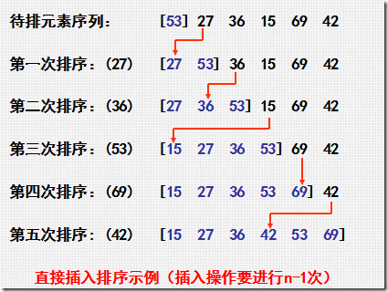插入排序算法
// 插入排序 从下标1开始每增1项排序一次，越往后遍历次数越多
function sort1(array) {
var len = array.length,
i, j, tmp, result;
// 设置数组副本
result = array.slice(0);
for(i=1; i < len; i++){
tmp = result[i];
j = i - 1;
while(j>=0 && tmp < result[j]){
result[j+1] = result[j];
j--;
}
result[j+1] = tmp;
}
return result;
}
原理图：
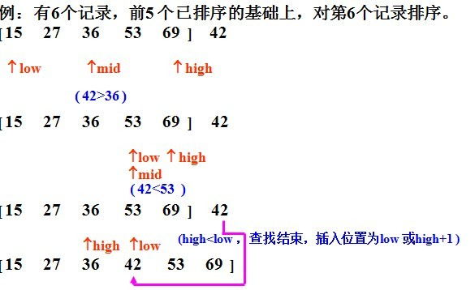二分插入排序
// 先在有序区通过二分查找的方法找到移动元素的起始位置，然后通过这个起始位置将后面所有的元素后移
function sort2(array) {
var len = array.length,
i, j, tmp, low, high, mid, result;
// 赋予数组副本
result = array.slice(0);
for(i = 1; i < len; i++){
tmp = result[i];
low = 0;
high = i - 1;
while(low <= high){
mid = parseInt((low + high)/2, 10);
if(tmp < result[mid]) high = mid - 1;
else low = mid + 1;
}
for(j = i - 1; j >= high+1; j--){
result[j+1] = result[j];
}
result[j+1] = tmp;
}
return result;
}
原理图：
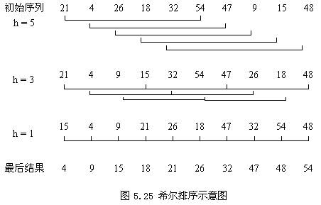希尔排序
// 希尔排序：先将整个待排序记录序列分割成若干个子序列，在在序列内分别进行直接插入排序，待整个序列基本有序时，再对全体记录进行一次直接插入排序
function sort3(array){
var len = array.length, gap = parseInt(len/2),
i, j, tmp, result;
// 复制数组
result = array.slice(0);
while(gap > 0){
for(i = gap; i < len; i++){
tmp = result[i];
j = i - gap;
while(j>=0 && tmp < result[j]){
result[j + gap] = result[j];
j = j - gap;
}
result[j + gap] = tmp;
}
gap = parseInt(gap/2);
}
return result;
}
原理图：
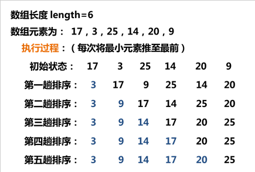冒泡排序
// 冒泡排序 每次将最小元素推至最前
function sort4(array) {
var len = array.length,
i, j, tmp, result;
result = array.slice(0);
for (i = 0; i < len; i++) {
for (j = len - 1; j > i; j--) {
if (result[j] < result[j - 1]) {
tmp = result[j - 1];
result[j - 1] = result[j];
result[j] = tmp;
}
}
}
return result;
}
原理图：
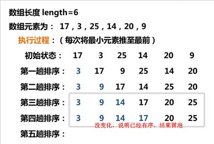改进冒泡排序
// 如果在某次的排序中没有出现交换的情况，那么说明在无序的元素现在已经是有序了，就可以直接返回了。
function sort5(array) {
var len = array.length,
i, j, tmp, exchange, result;
result = array.slice(0);
for (i = 0; i < len; i++) {
exchange = 0;
for (j = len - 1; j > i; j--) {
if (result[j] < result[j - 1]) {
tmp = result[j];
result[j] = result[j - 1];
result[j - 1] = tmp;
exchange = 1;
}
}
if (!exchange) return result;
}
return result;
}
原理图：
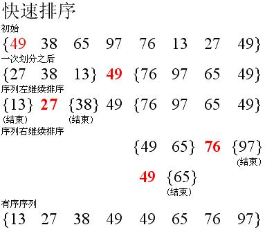快速排序
//（1）在数据集之中，选择一个元素作为"基准"（pivot）。
//（2）所有小于"基准"的元素，都移到"基准"的左边；所有大于"基准"的元素，都移到"基准"的右边。
//（3）对"基准"左边和右边的两个子集，不断重复第一步和第二步，直到所有子集只剩下一个元素为止。
function sort6(array) {
var tmp_array = array.slice(0), result,
quickSort = function(arr) {
if (arr.length <= 1) { return arr; }
var pivotIndex = Math.floor(arr.length / 2);
var pivot = arr.splice(pivotIndex, 1)[0];
var left = [];
var right = [];
for (var i = 0; i < arr.length; i++){
if (arr[i] < pivot) {
left.push(arr[i]);
} else {
right.push(arr[i]);
}
}
return quickSort(left).concat([pivot], quickSort(right));
};
result = quickSort(tmp_array);
return result;
}
原理图：
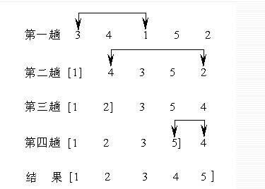选择排序
// 在无序区中选出最小的元素，然后将它和无序区的第一个元素交换位置。
// 原理跟冒泡排序一样，算是冒泡的衍生版本
function sort7(array) {
var len = array.length,
i, j, k, tmp, result;
result = array.slice(0);
for (i = 0; i < len; i++) {
k = i;
for (j = i + 1; j < len; j++) {
if (result[j] < result[k]) k = j;
}
if (k != i) {
tmp = result[k];
result[k] = result[i];
result[i] = tmp;
}
}
return result;
}
堆排序原理太复杂，一张图表达不了：详情请看： 堆排序原理分析
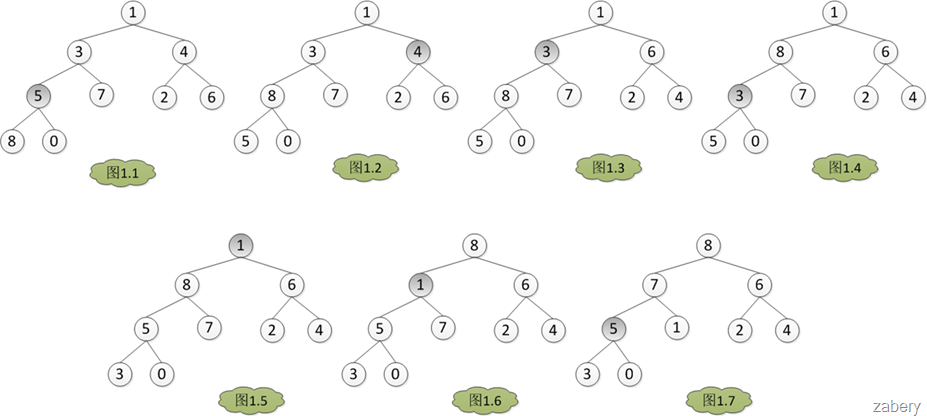
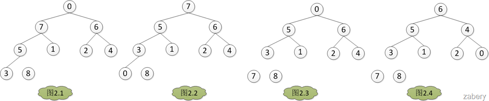
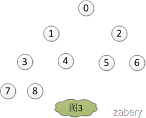
堆排序
// 1) 初始堆：将原始数组调整成大根堆的方法——筛选算法:子节点都比父节点小
// 2) 堆排序： 每次将堆顶元素与数组最后面的且没有被置换的元素互换。
// 参考代码： http://bubkoo.com/2014/01/14/sort-algorithm/heap-sort/
function sort8(array) {
var result = array.slice(0);
function swap(array, i, j) {
var temp = array[i];
array[i] = array[j];
array[j] = temp;
}
function maxHeapify(array, index, heapSize) {
var iMax, iLeft, iRight;
while (true) {
iMax = index;
iLeft = 2 * index + 1;
iRight = 2 * (index + 1);
if (iLeft < heapSize && array[index] < array[iLeft]) {
iMax = iLeft;
}
if (iRight < heapSize && array[iMax] < array[iRight]) {
iMax = iRight;
}
if (iMax != index) {
swap(array, iMax, index);
index = iMax;
} else {
break;
}
}
}
function buildMaxHeap(array) {
var i, iParent = Math.floor(array.length / 2) - 1;
for (i = iParent; i >= 0; i--) {
maxHeapify(array, i, array.length);
}
}
function sort(array) {
buildMaxHeap(array);
for (var i = array.length - 1; i > 0; i--) {
swap(array, 0, i);
maxHeapify(array, 0, i);
}
return array;
}
return sort(result);
}
原理图：
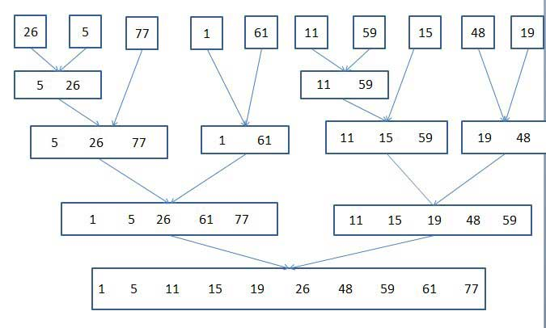归并排序
// 合并排序：将无序的数组 拆成N部分进行有序处理，然后合并；
// 参考代码： https://gist.github.com/paullewis/1982121
function sort9(array) {
var result = array.slice(0);
// 递归调用合并函数
function sort(array) {
var length = array.length,
mid = Math.floor(length * 0.5),
left = array.slice(0, mid),
right = array.slice(mid, length);
if (length === 1) {
return array;
}
return merge(sort(left), sort(right));
}
// 合并 两有序的数组
function merge(left, right) {
var result = [];
while (left.length || right.length) {
if (left.length && right.length) {
if (left[0] < right[0]) {
result.push(left.shift());
} else {
result.push(right.shift());
}
} else if (left.length) {
result.push(left.shift());
} else {
result.push(right.shift());
}
}
return result;
}
return sort(result);
}
显示随机数组
原始数组： [8,2, 3, 55, 12, 20, 16, 18, 15, 20, 11, 7]
对应代码：
// 随机从数组中获取 N个不重复的值, 默认从数组取一个值
function ran1(array, n){
var _result = [], _index = 0, _arrayTemp;
// 防止原数组被改变
_arryTemp = array.slice(0);
if (array == null || array.length == 0 || array.length < n){
return _result;
}
// 随机获取一个值
if (n == null){
_index = Math.floor(Math.random() * array.length);
_result.push(array[_index]);
}else{
// 随机获取N个值
for (var i = 0; i < n; i++){
_index = Math.floor(Math.random() * _arrayTemp.length);
_result.push(_arrayTemp[_index]);
// 删除该元素
_arrayTemp.splice(_index, 1);
}
}
return _result;
}
对应代码：
// 随机打乱数组，使数组内元素与原来位置完全不同
function ran2(array){
var array_tmp = [], i , j, len, new_a = [], a_obj;
// 添加数组原位置标志位
for (i = 0, len = array.length; i < len; i++) {
a_obj = {
'key': i,
'val': array[i]
};
array_tmp.push(a_obj);
}
for (i = 0, len = array.length; i < len; i++) {
j = ranCount(array_tmp.length);
// 如下标位置与原值重复，重新随机
while ( i === array_tmp[j].key ) {
j = ranCount(array_tmp.length);
}
new_a.push( array_tmp[j].val );
// 删除数组
array_tmp.splice(j,1);
}
// 获得给定数字的随机数, 出错返回-1
function ranCount(n){
var result = parseInt(n, 10);
if ( isNaN(result) ) {
result = -1;
}
result = Math.floor(Math.random() * result)
return result;
}
return new_a;
}
对应代码：
// 从指定范围内(暂定为100以内)，随机获取N（暂定为10）个值的数组
function ran3(){
var result = [], SCOPE_NO = 100, COUNT = 10;
result = getRandomNo(SCOPE_NO, COUNT);
function getRandomNo(scope_no, count){
var i, s_n, ran_n, _result = [];
s_n = parseInt(scope_no, 10);
for (i = 0; i < count; i++) {
ran_n = Math.floor(Math.random() * s_n);
_result.push(ran_n);
}
return _result;
}
return result;
}